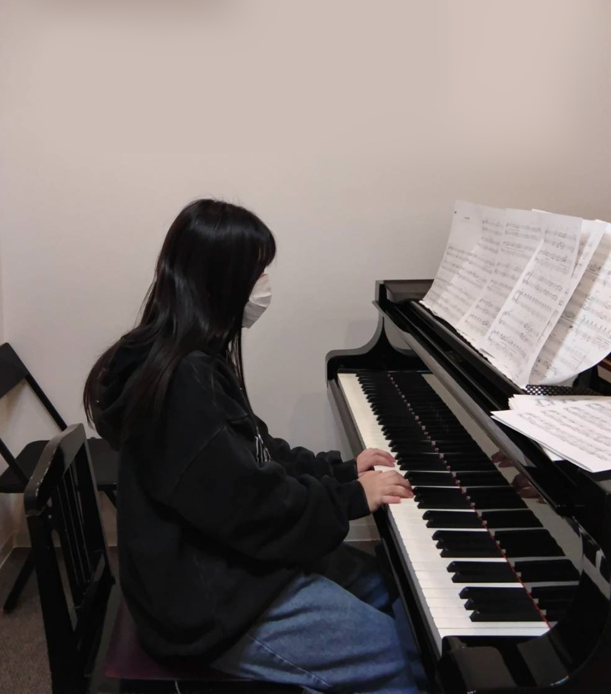
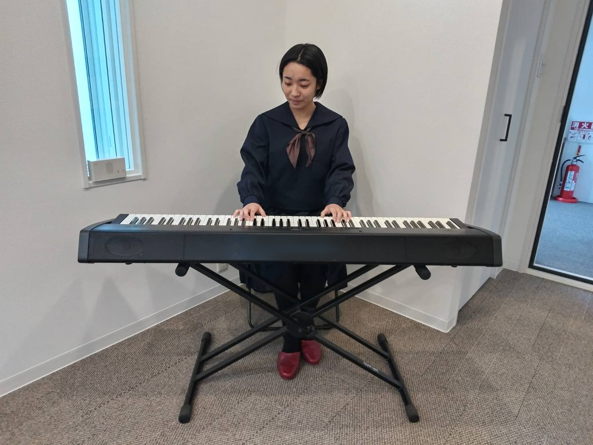

01
曲は弾けるが、演奏が平坦になる
音色、フレーズ、強弱、呼吸を整え、音楽の流れが伝わる演奏を目指します。
小学校高学年・中学生・高校生・ピアノ経験者の方へ。譜読みの先にある音色、表現、タッチ、ペダル、身体の使い方まで、現在の課題と目標に合わせて丁寧にレッスンします。

「上級者」と名乗るほどではなくても大丈夫です。ある程度弾けるようになり、次に何を伸ばせばよいか迷っている方もご相談ください。
音色、フレーズ、強弱、呼吸を整え、音楽の流れが伝わる演奏を目指します。
歌を支えるテンポ、バランス、ペダル、本番に向けた安定感を確認します。
現在の力に合わせて練習方法を整理し、必要に応じて弾きやすい形へのアレンジも行います。
部活動や勉強との両立を考えながら、目標と生活に合う進め方を相談します。

楽譜どおりに音を並べることに加え、姿勢、タッチ、音の方向、フレーズ、ペダル、響きの聴き方まで確認します。
一方的に課題を増やすのではなく、本人の「この曲を弾きたい」「ここを上手くしたい」という気持ちを大切にします。
現在弾いている曲、これまで使った教材、学校の伴奏譜などをお持ちください。無料体験は60分〜120分です。
弾きたい曲、学校伴奏、発表会、現在困っている部分などを確認します。
今の弾き方を見ながら、良いところと改善できるポイントを具体的にお伝えします。
練習方法やレッスンの方向性を説明します。体験後の無理な勧誘はありません。
はい。譜読みがある程度できる方、以前習っていた方、好きな曲を独学している方などもご相談いただけます。
本番の日程や現在の進み具合を確認しながら、テンポ、音色、バランス、ペダルまで見ていきます。
現在の力に合わせた練習方法をご提案します。必要に応じて、弾きやすく格好よく聴こえる形へのアレンジも可能です。
1回60分の個別レッスンです。月4回6,500円〜で、学年や進度によって段階的に調整します。
「この曲を仕上げたい」「伴奏を任された」「中学生になっても続けたい」など、現在の状況をLINEでお知らせください。空き時間の確認だけでも大丈夫です。
LINEで相談する